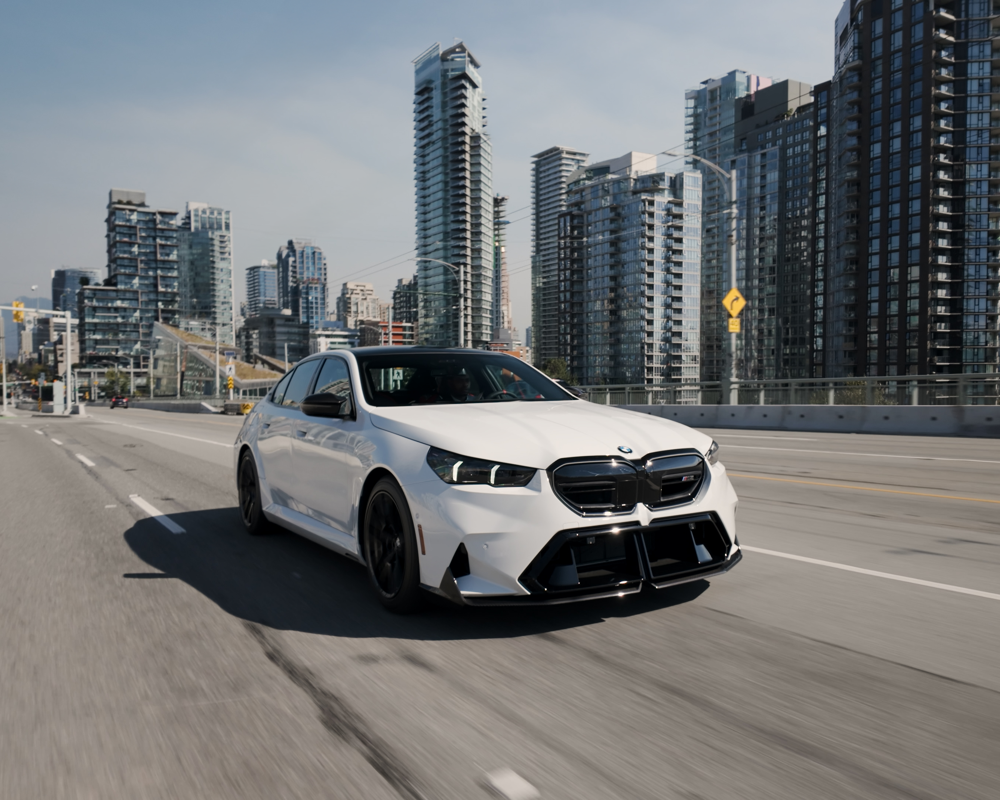
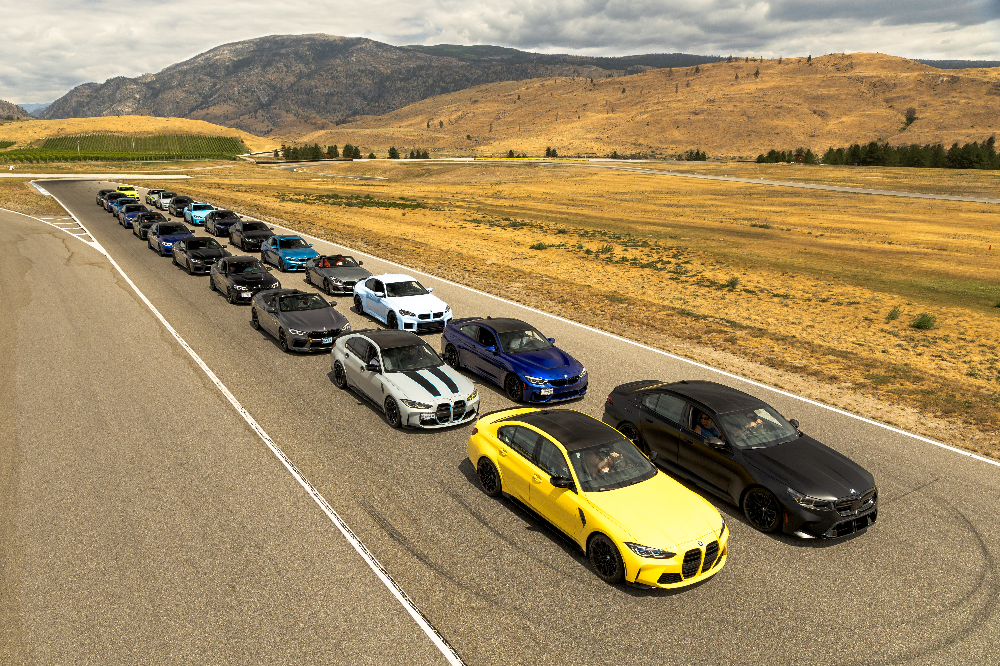
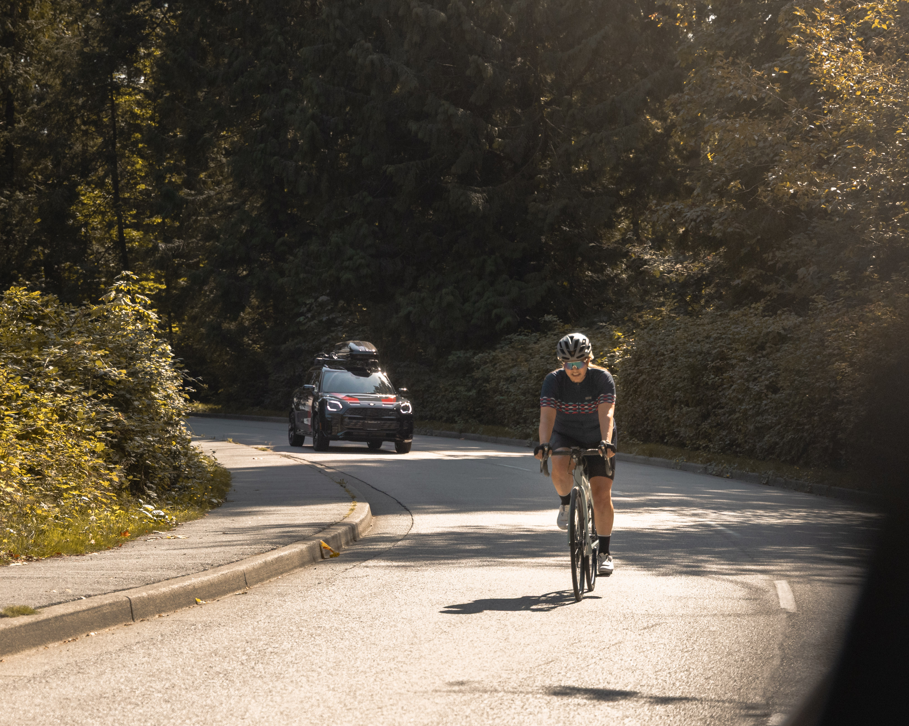
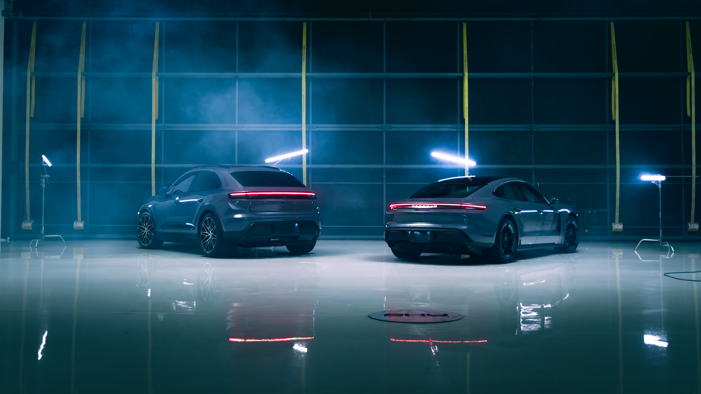
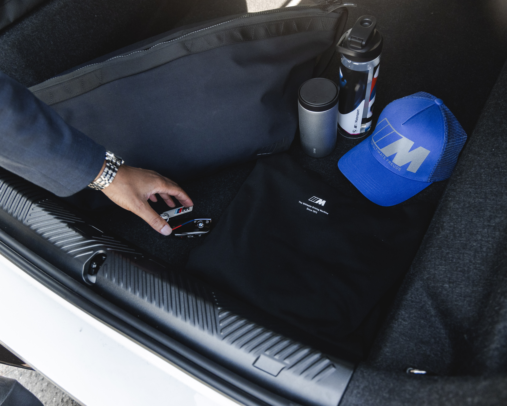
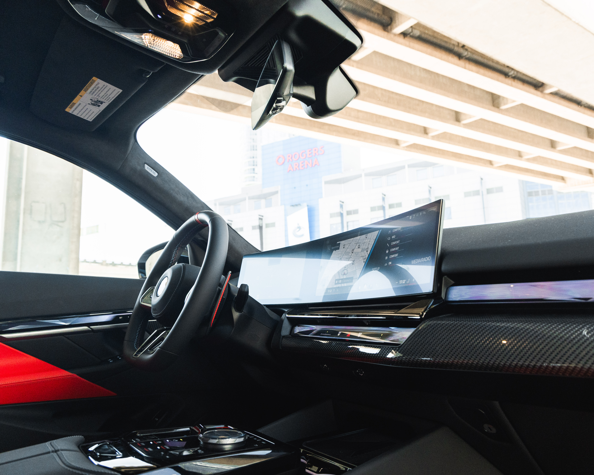
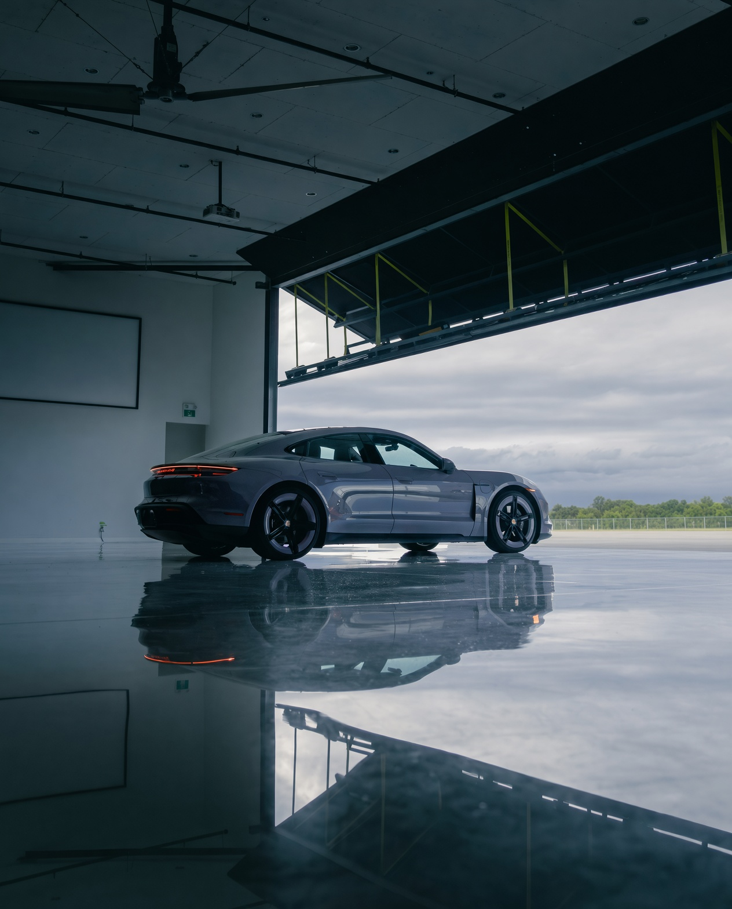
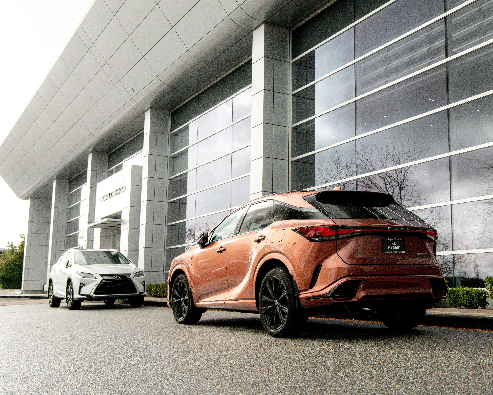
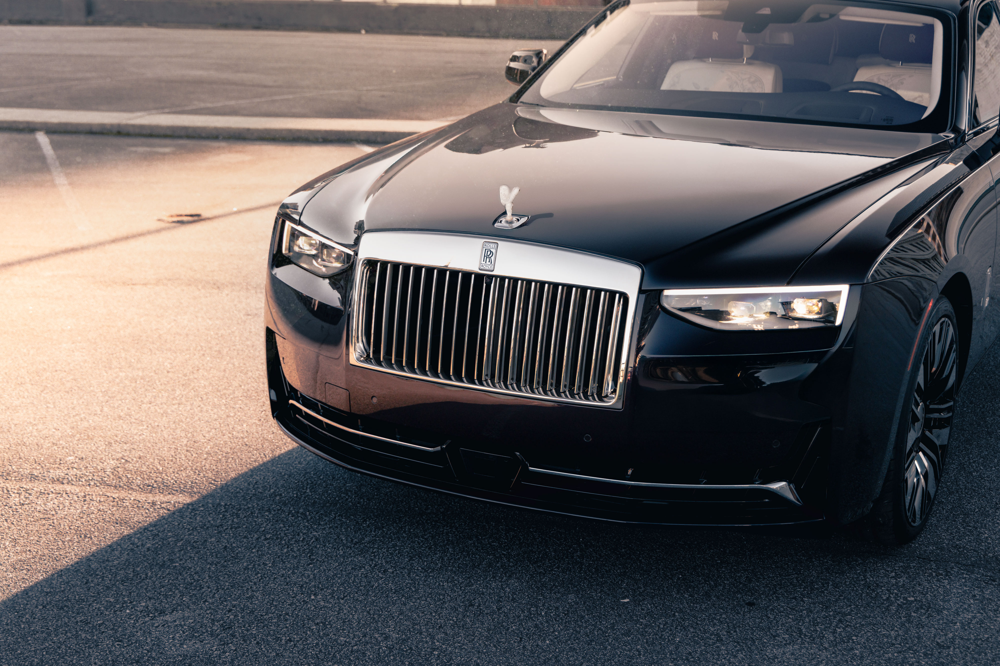

SELECTED
WORK

Embedded within OpenRoad Group's corporate marketing team as a shared service content specialist — serving 4–8 dealerships simultaneously across two regions, not as a store-level hire but as part of the centralized marketing function that supported the entire dealer network. Owned the full content pipeline from creative strategy through post-production and multi-platform distribution, independently developing and managing a monthly content calendar system across all assigned stores.
Assets fed simultaneously into social media (Facebook, Instagram, YouTube, LinkedIn, and Xiaohongshu via a dedicated channel contractor), Google Performance Max campaigns, Meta Business ads, dealership websites, monthly email campaigns, printed collateral, digital billboards, and in-store displays — supplying specialist team members across paid, digital, and traditional marketing channels for both sales and service departments. Wrote all social captions across all brands, maintaining distinct brand voices simultaneously — from Rolls-Royce to Honda.
Attended integrated monthly marketing reviews alongside paid media, email, and CRM specialists — presenting content performance recaps to General Managers, Service Managers, and Sales Managers across all stores, and providing input on campaign direction for the month ahead.
- 4–8 brands managed simultaneously — Rolls-Royce, Porsche, BMW, MINI, Lexus, Acura, Honda, Toyota — maintaining compliance across up to 8 manufacturer brand guidelines at once
- 700+ publish-ready assets produced over tenure across social, Meta Business ads, Google PMAX, email, print, digital billboards, and in-store
- 50M+ combined impressions across all managed profiles — Rolls-Royce Vancouver led the portfolio at a 6.5% engagement rate, well above automotive industry benchmarks, with Instagram peaks exceeding 20%
- 1st & 3rd place nationally — BMW Canada Vehicle Accessories Video Competition 2025. All three national podium spots claimed by OpenRoad stores. Entries required a scripted video with talent and a platform-adapted carousel — concepted, directed, and produced independently.
- Presented monthly content performance reports as part of integrated marketing reviews covering paid media, email, and CRM — reporting across the full store leadership structure
- Field production beyond regional brief — regularly contributed to OEM-driven and corporate-level productions including the Porsche Macan EV launch (directed hired models, set up lighting rigs, positioned vehicles) and BMW track day at Area 27 (directed a 20–30 car convoy, shot rollers from a moving vehicle)










Camera operator across a range of corporate and institutional productions — covering clients from international healthcare to Canada's top business schools to skilled trades. Projects spanned intimate long-form interview formats, large-scale conference coverage, and on-location industrial shoots.
- Patient's Voice 2025 — 3rd International Conference on patient involvement in health and social care education. International audience spanning medicine, nursing, social work, and allied health. A conference held once every decade. Entrusted to manage all on-location shooting independently when the director was unavailable — handling the full production solo.
- UBC Sauder School of Business — Recurring camera operator for the annual recap series at one of Canada's top business schools. Called back 4 consecutive years — a track record built entirely on consistent, professional delivery.
- Honour House Society — Tour of Honour, Victoria BC — Civic event bringing together the local mayor, firefighters, and community leaders for a nonprofit awareness campaign.
- Operator Training School, Langley BC — On-location industrial shoot covering heavy equipment operations including excavators and transport vehicles.
University Events
TheCalendar.ca media team — UBC Polar Bear Run (2018 & 2019) and the 2019 campus-wide Snowball Fight, an event that drew local news coverage. Fast-turnaround documentary-style content.
Roblox — Icebreaker Trailer
Produced a game trailer for Roblox title Icebreaker that reached 800K+ views, receiving recognition from Roblox's official channels.
Watch on YouTube ↗Portrait Photography
Individual and professional portrait sessions. Clean, directed portraiture suited for personal branding, headshots, and social profiles.